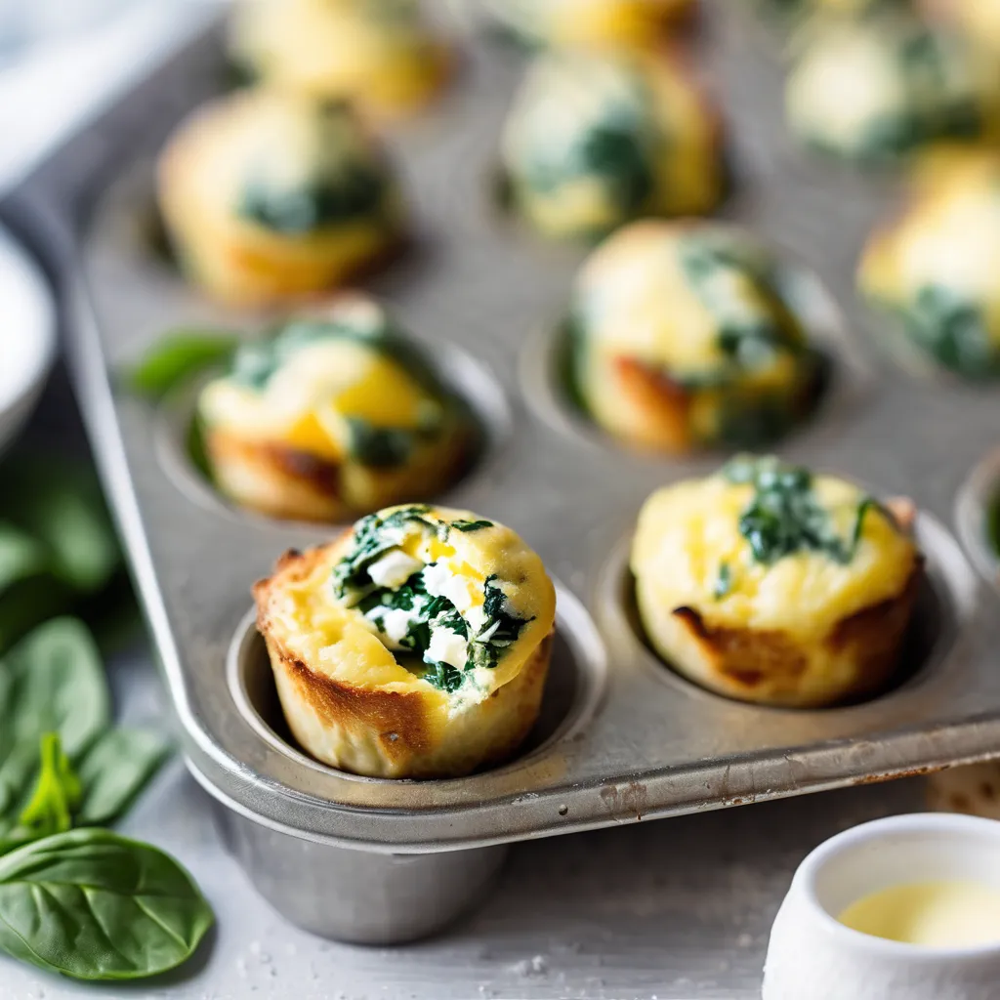
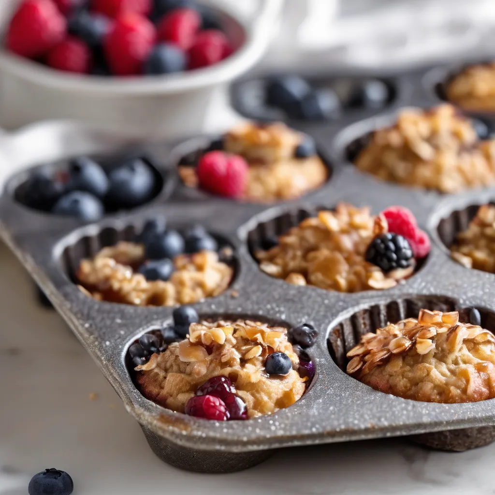
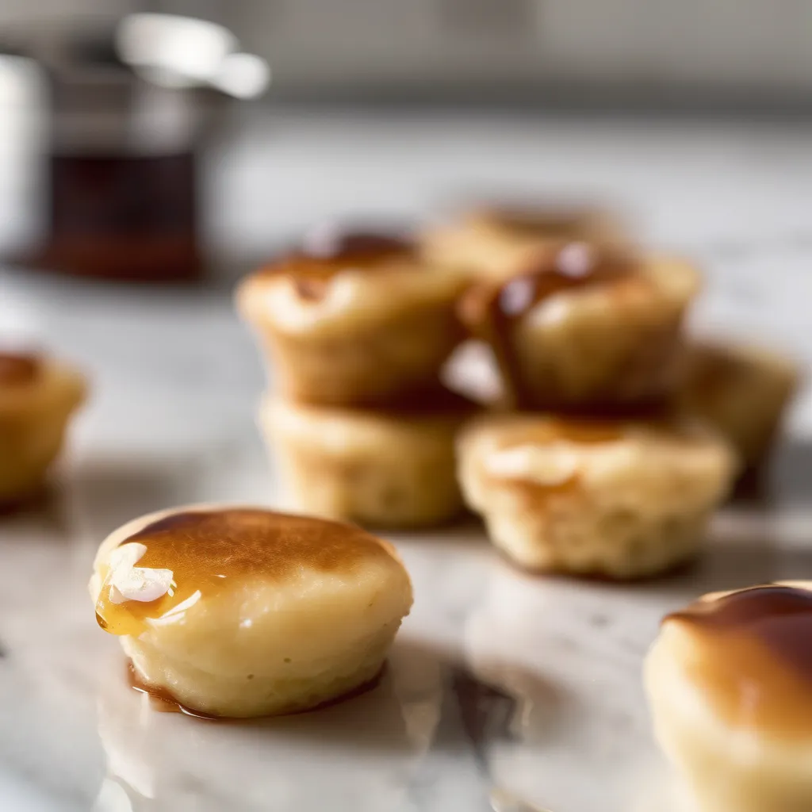
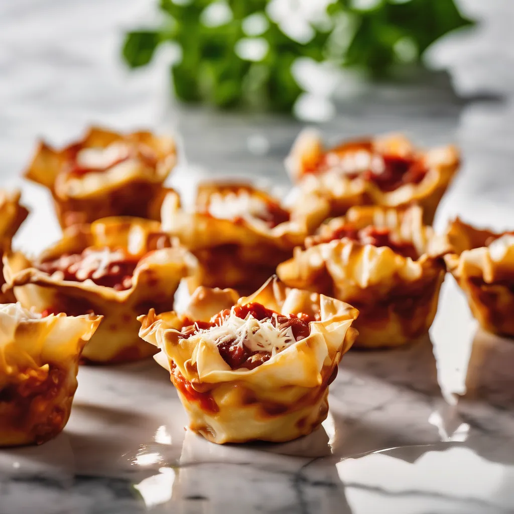
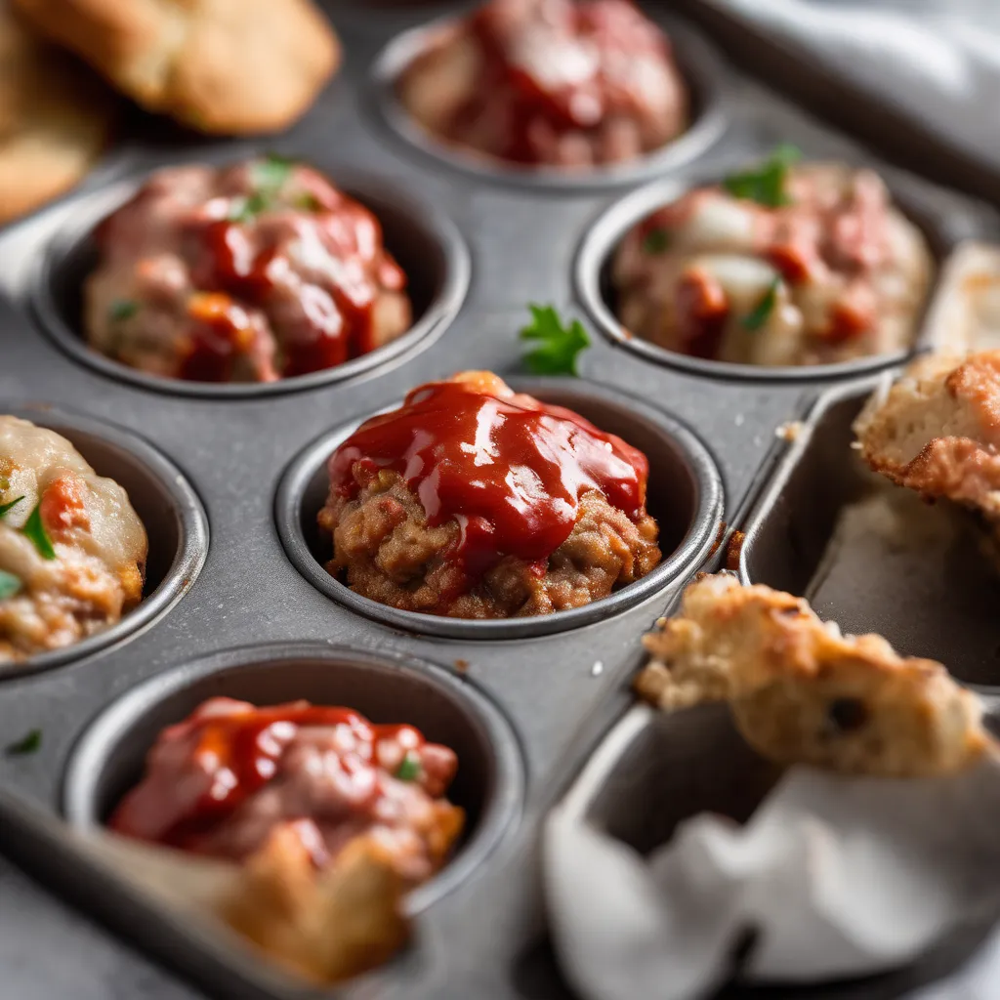
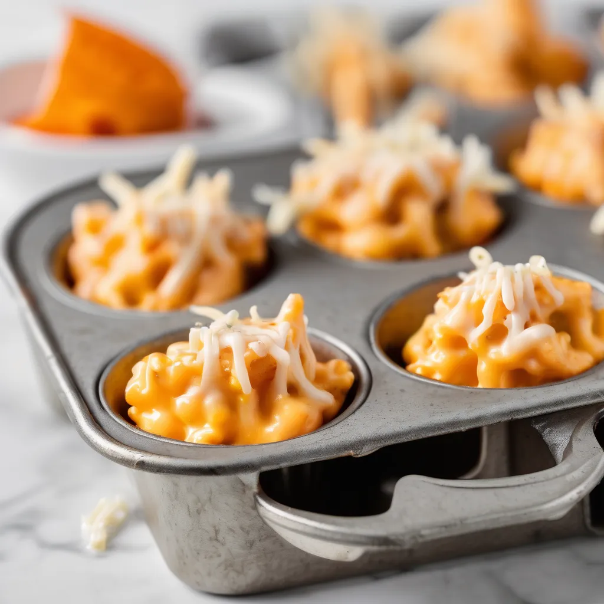
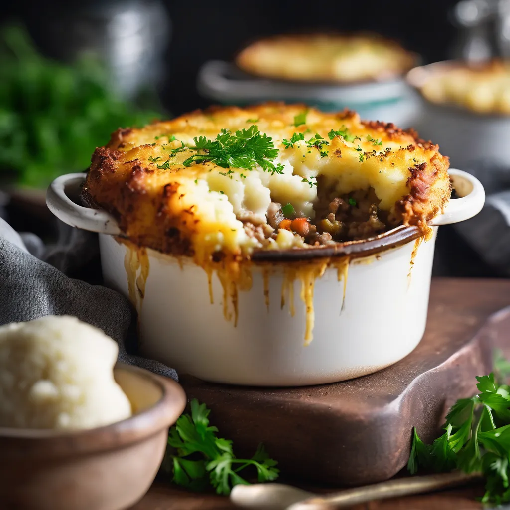
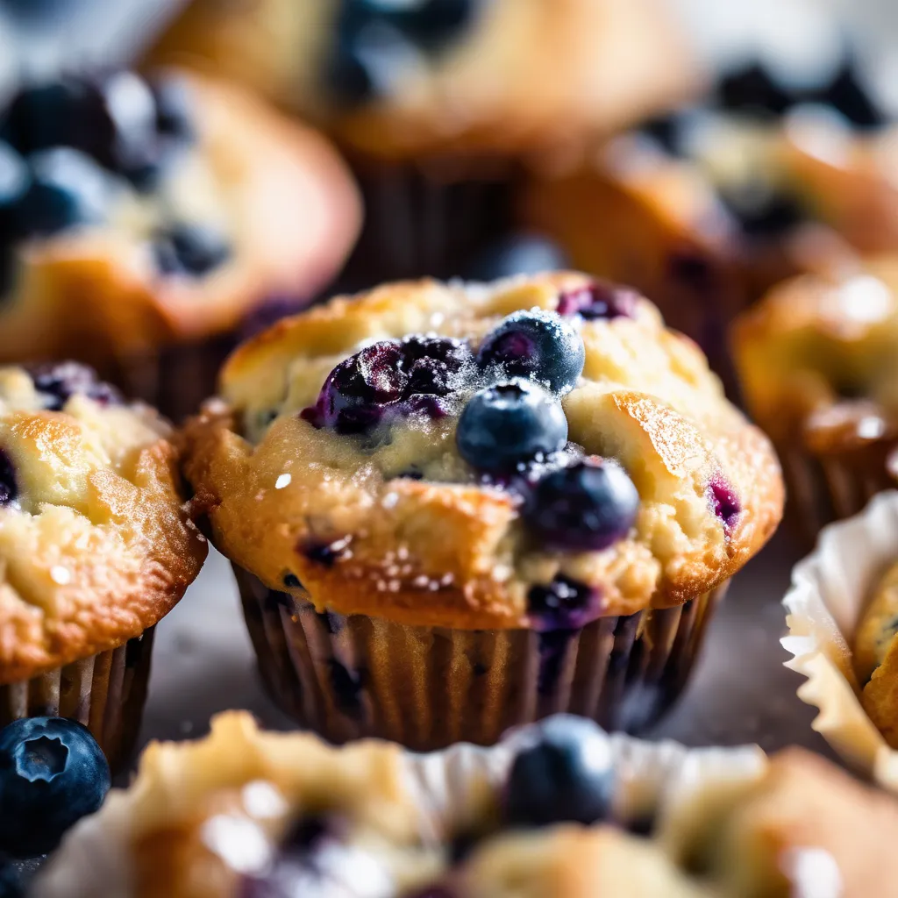

Featured Recipe
Caramelized Custard Tart Cups
These Portuguese-inspired custard tart cups capture the blistered, caramelized tops and shattering layers of traditional pastéis de nata, reimagined for a standard muffin pan. A quick laminated puff pastry base hugs a silky lemon–cinnamon custard that bakes into golden, freckled rounds that lift cleanly from the tin.
View Recipe →Recipes

Sweet
Lemon Ricotta Polenta Cups
These tender Italian-inspired cups layer a crisp, buttery polenta base with a creamy lemon–ricotta custard that bakes up just set and lightly golden. Each round, molded portion pops out of the tin as a self-contained, cheesecake-adjacent bite with a pleasantly sandy cornmeal crust and bright citrus finish. Serve warm or at room temperature with a dusting of powdered sugar and a few fresh berries.

Party
Tandoori Chicken Naan Cups
These Tandoori Chicken Naan Cups pack smoky spiced chicken, cooling yogurt, and quick pickled onions into a soft, crisp-edged naan base molded right into the muffin wells. Each round cup holds together as a hand-held Indian-inspired bite with charry flavor and bright, tangy crunch. They’re just as good warm from the oven as they are at room temperature for lunches or parties.

Party
Kimchi Cheddar Rice Cups
These Korean-inspired rice cups bake into crisp-edged, cheesy rounds packed with tangy kimchi, scallions, and sesame. Each cup holds together like a little rice cake with molten cheddar inside and a spicy gochujang drizzle on top. They’re equally good warm from the pan or at room temperature for lunches and parties.

Savory
Miso Ginger Donburi Cups
Tender miso-ginger glazed salmon is tucked into crisp nori–sesame rice bases that bake into sturdy, round cups you can lift straight from the pan. Each molded cup eats like a single-serving salmon donburi, finished with scallions, cucumber, and a touch of Japanese mayo for richness.

Party
Smoky Chorizo Tortilla Cups
Corn tortillas are pressed into the muffin wells to form crisp, golden cups, then filled with smoky Spanish chorizo, sautéed peppers and onions, and a rich paprika‑spiked egg custard. Each round, flared cup bakes up into a self-contained bite with a tender center and crisp edges, perfect with a dollop of garlicky tomato aioli. These travel well, reheat beautifully, and hit that sweet spot between tapas and brunch.

Savory
Saigon Sunrise Breakfast Cups
These Vietnamese-inspired breakfast cups bake up into tender, custardy rounds packed with caramelized pork, quick-pickled vegetables, and fresh herbs. Each cup carries the flavors of a classic bánh mì—savory, sweet, tangy, and herbaceous—held together in a neat, hand-friendly bite.

Breakfast
Salsa Verde Chilaquiles Cups
Corn tortilla strips are baked into crisp, saucy cups with roasted tomatillo salsa, black beans, and melty Oaxaca cheese, then finished with crema, avocado, and cilantro. These chilaquiles cups hold their shape straight from the muffin pan but eat like a cozy Mexican brunch, with bright heat and satisfying crunch in every bite.

Savory
Spanakopita Phyllo Cups
These spanakopita cups tuck garlicky spinach, leeks, and salty feta into crisp, flaky phyllo that bakes into perfectly round, hand-held bites. The muffin wells shape the layered dough into sturdy little shells so you get shattering crunch around a soft, savory Greek-inspired filling. Ideal warm or at room temperature for lunches, mezze platters, or parties.

Breakfast
Paneer Saag Egg Bites
These paneer saag egg bites tuck spiced spinach, soft paneer, and a whisper of garam masala into tender, protein-rich cups that pop cleanly out of the pan. They eat like individual Indian-inspired frittatas, perfect with chutney for breakfast or a light lunch.

Savory
Teriyaki Salmon Rice Cups
These teriyaki salmon rice cups tuck soy-glazed salmon, sticky rice, and scallions into crisp-edged, molded rounds that lift cleanly from the pan. They eat like handheld sushi bowls with a glossy homemade teriyaki glaze, a touch of sesame, and a cool cucumber topping.

Breakfast
Harissa Chickpea Feta Cups
These savory North African–inspired cups bake chickpeas, roasted peppers, and spinach into a softly set egg base with pockets of salty feta and smoky harissa heat. Each round, golden portion pops out of the tin as a complete protein-packed bite that reheats beautifully for weekday breakfasts or light lunches.

Savory
Roasted Broccoli Egg Cups
Tender baked egg cups packed with sharp cheese, roasted broccoli, and a touch of smoked paprika for warmth. They’re richly savory, beautifully set, and just as appealing at a leisurely brunch as they are straight from the fridge.

Breakfast
Savory Bacon Biscuit Rounds
These hearty biscuit rounds bake up as individual portions layered with smoky bacon, sharp cheddar, and scallions—sturdy enough for grab-and-go breakfasts all week. They reheat beautifully and eat like a cross between a biscuit and a breakfast sandwich without the fuss of assembly.

Savory
Crispy Chorizo Breakfast Cups
Smoky chorizo, crisp golden hash browns, and a creamy pepper-jack egg custard bake into rich, savory little cups with a gentle kick and plenty of crunch in every bite.

Savory
Herbed Sausage Sunrise Cups
Crisp-edged sweet potato rounds cradle juicy turkey sausage, tender peppers, and a fluffy herb-flecked egg custard, all crowned with sharp cheddar and Parmesan. Each bite is rich, aromatic, and deeply satisfying—perfect alongside hot coffee or a bright citrus salad.

Savory
Smoky Sweet Potato Frittatas
Tender, custardy cups packed with caramelized sweet potato, smoky paprika, and sharp cheddar, these little frittatas taste like a pan of roasted vegetables wrapped in rich, savory eggs. A spoonful of Greek yogurt keeps them silky, while a tangle of greens and herbs adds fresh, gardeny flavor in every bite.

Savory
Maple Hash Brown Nests
These maple-scented hash brown nests bake up into crisp-edged, tender-centered portions that stay delicious for days. Shredded potatoes form a golden crust that cradles savory breakfast pork, peppers, and a just-set egg layer. They’re sturdy enough to grab on busy mornings, but nuanced enough in flavor that you’ll still look forward to them by Thursday.

Savory
Prosciutto Potato Egg Nests
Shredded potatoes, caramelized onions, and sharp provolone are tucked into crisped prosciutto cups, then finished with a softly baked egg and chive-flecked cream. Salty, savory, and richly textured, these little nests bring serious brunch energy to any morning.

Party
Mini Caprese Bruschetta Bites
All the flavors of a classic caprese bruschetta—garlic toast, juicy tomatoes, fresh mozzarella, and basil—baked into tidy, handheld muffin tin bites. A buttery Parmesan bread base crisps in the oven, then gets filled with a warm caprese mixture and finished with a sweet-tart balsamic drizzle. Ideal as a party appetizer or light summer snack.

Savory
Smoky Cheddar Breakfast Bites
Little golden bites packed with tender vegetables, sharp cheddar, Parmesan, and a whisper of smoked paprika, these savory muffins bring all the cozy flavors of a loaded frittata in handheld form. They’re rich, aromatic, and deeply satisfying—perfect with hot coffee, a splash of hot sauce, or tucked into a warm, toasty English muffin.

Breakfast
Roasted Veggie Egg Cups
These roasted veggie egg prep cups are built for grab-and-go breakfasts all week: high-protein, packed with vegetables, and they reheat beautifully. Roasting the vegetables first concentrates their flavor so the eggs don’t taste like a sad hotel buffet. Make a pan on Sunday and you’ve got breakfast handled through Friday.

Breakfast
Roasted Veggie Frittata Cups
These muffin tin frittatas are packed with roasted vegetables, sharp cheese, and herbs for a make-ahead breakfast that actually tastes like something you’d order at a café. They reheat beautifully all week, stay tender instead of rubbery, and are endlessly adaptable to whatever’s in your crisper drawer. Make a pan on Sunday and you’ve got grab-and-go protein portions ready to go.

Sweet
Mini Lemon Meringue Cups
These mini lemon meringue cups give you all the bright, tart snap of a classic lemon meringue pie in crisp, buttery, handheld portions. A shortbread-style crust, sharp lemon curd, and toasted marshmallowy meringue are built right in a standard 12-cup muffin tin—no tart rings, no drama.

Breakfast
Make-Ahead Veggie & Sausage Egg Cups
These protein-packed egg cups are built for the workweek: hearty turkey sausage, roasted peppers, spinach, and sharp cheddar baked into perfectly portioned frittata-style bites. They reheat beautifully, freeze well, and actually taste like a real breakfast, not a sad “meal prep” compromise. One pan on Sunday, grab-and-go breakfasts all week.

Breakfast
Spinach & Feta Egg Bites
Velvety, protein-packed egg bites that mimic the sous-vide texture.

Breakfast
Baked Oatmeal Breakfast Cups
Hearty, portable oatmeal portions that are naturally sweetened and perfect for a quick morning fuel.

Breakfast
Mini Pancake Bites
Fluffy pancake portions that you don't have to flip. Perfect for dipping.

Savory
Muffin Tin Lasagna Cups
Crispy-edged, multi-layered mini lasagnas using wonton wrappers.

Savory
Mini Meatloaf Bites
Savory, glazed mini meatloaves that cook in half the time of a traditional loaf.

Savory
Buffalo Chicken Mac & Cheese Bites
Creamy mac and cheese with a spicy buffalo kick, crisped to perfection.

Savory
Mini Shepherd's Pie Pots
Individual servings of classic Shepherd's Pie with a toasted potato peak.
Savory
Jumbo Cornbread Honey Bites
Massive, moist, and sweet cornbread muffins for chili or BBQ.

Sweet
Classic Blueberry Muffin Tops
The gold standard: bursting with berries and a perfectly domed top.
Sweet
Dark Chocolate Chip Decadence
Rich, cocoa-infused muffins loaded with dark chocolate chips.